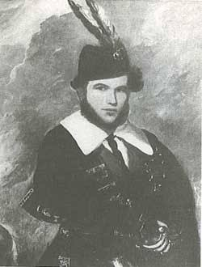

A skót dudazene világát gyakran két nagy fogalommal írják le: Ceòl Mór és Ceòl Beag. A gael kifejezések szó szerint nagy zenét és kis zenét jelentenek, de a különbség nem értékítélet. Inkább két eltérő zenei gondolkodásmódot jelölnek: az egyik hosszú, ünnepélyes, szinte epikus forma, a másik közvetlenebb, ritmikusabb, tánchoz, meneteléshez és közösségi alkalmakhoz kötődő repertoár.
Ceòl Mór: a nagy zene
A Ceòl Mór, más néven piobaireachd vagy pibroch, a Great Highland Bagpipe klasszikus zenei formája. Egy piobaireachd általában egy alap témából, az urlarból indul, majd variációkon keresztül bontja ki a dallamot. Nem gyors hatásra épít, hanem időre, figyelemre és mélységre. Ez a dudazene komolyzenei oldala: meditatív, szertartásos és nagy lélegzetű.
Piobaireachd példa
John MacFadyen - Clan Ranald's Salute, 1971
Ceòl Beag: a kis zene
A Ceòl Beag a menetek, strathspey-k, reel-ek, jigek, hornpipe-ok és könnyebben befogadható dallamok világa. Ez az a zene, amelyet sokan először társítanak a skót dudához: felvonulások, ünnepségek, táncok és közösségi események hangja. Technikailag ez sem feltétlenül könnyű, de más jellegű figyelmet kíván: ritmust, lendületet, tiszta artikulációt és feszes tempót.
A MacCrimmonok öröksége
A piobaireachd történetében különösen fontos a MacCrimmon család neve. A hagyomány szerint Skye szigetén, Boreraig környékén működött az a dudás iskola, amelyet a MacCrimmonokhoz kötnek, és amely a klasszikus dudazene egyik mitikus központjává vált. A történeti részletek körül sok a legenda, de a név máig a régi mesteri tudás, a nagy formák és a piobaireachd hagyomány jelképe.
Calum Piobaire
Calum Piobaire, vagyis Malcolm the Piper alakja szintén a régi dudás hagyományhoz kapcsolódik. A név a klánvilág, az örökölt dallamok és a mester-tanítvány láncolat emlékét idézi. Ezek a figurák azért fontosak, mert megmutatják: a dudazene nemcsak dallamgyűjtemény, hanem történetek, családok, közösségek és emlékezet rendszere is.
Angus MacKay és a lejegyzett hagyomány

Angus MacKay a piobaireachd lejegyzett hagyományának egyik kulcsfigurája.
Angus MacKay a 19. században döntő szerepet játszott abban, hogy a piobaireachd repertoár írott formában is fennmaradjon. Gyűjtései és lejegyzései ma is alapvető hivatkozási pontok. A szóbeli hagyomány természetesen továbbra is fontos maradt, de MacKay munkája segített abban, hogy a nagy zene ne csak mesterről tanítványra, hanem kottákon és gyűjteményeken keresztül is tovább éljen.
Culloden után: tilalom, törés és túlélés
Az 1746-os cullodeni csata után a brit állam keményen lépett fel a jakobita felkeléshez kötött felföldi kultúrával szemben. Gyakran hallani úgy, hogy a skót dudát betiltották. Pontosabban fogalmazva: a felföldi fegyverviselést, viseletet és klánrendszert érintő korlátozások erősen megtörték a régi társadalmi közeget, és voltak jogi esetek, ahol a dudát háborús eszközként kezelték. A hangszer hagyománya azonban nem tűnt el: katonai, családi és közösségi csatornákon tovább élt.
Miért fontos ez ma?
A Ceòl Mór és Ceòl Beag különbsége segít megérteni, hogy a skót duda nem egyetlen hangulat hangszere. Tud méltóságteljes, lassan kibomló zenei emlékmű lenni, és tud közvetlen, ünnepi, táncos vagy menetelő karaktert is hozni. Aki dudát tanul vagy hallgat, előbb-utóbb mindkét világban talál valamit: az egyik a mélységet adja, a másik a mozgást.